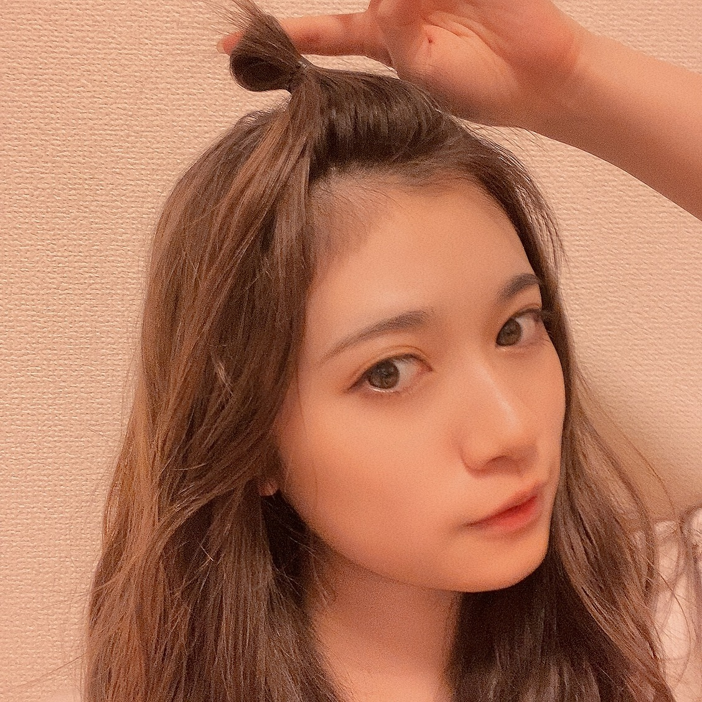
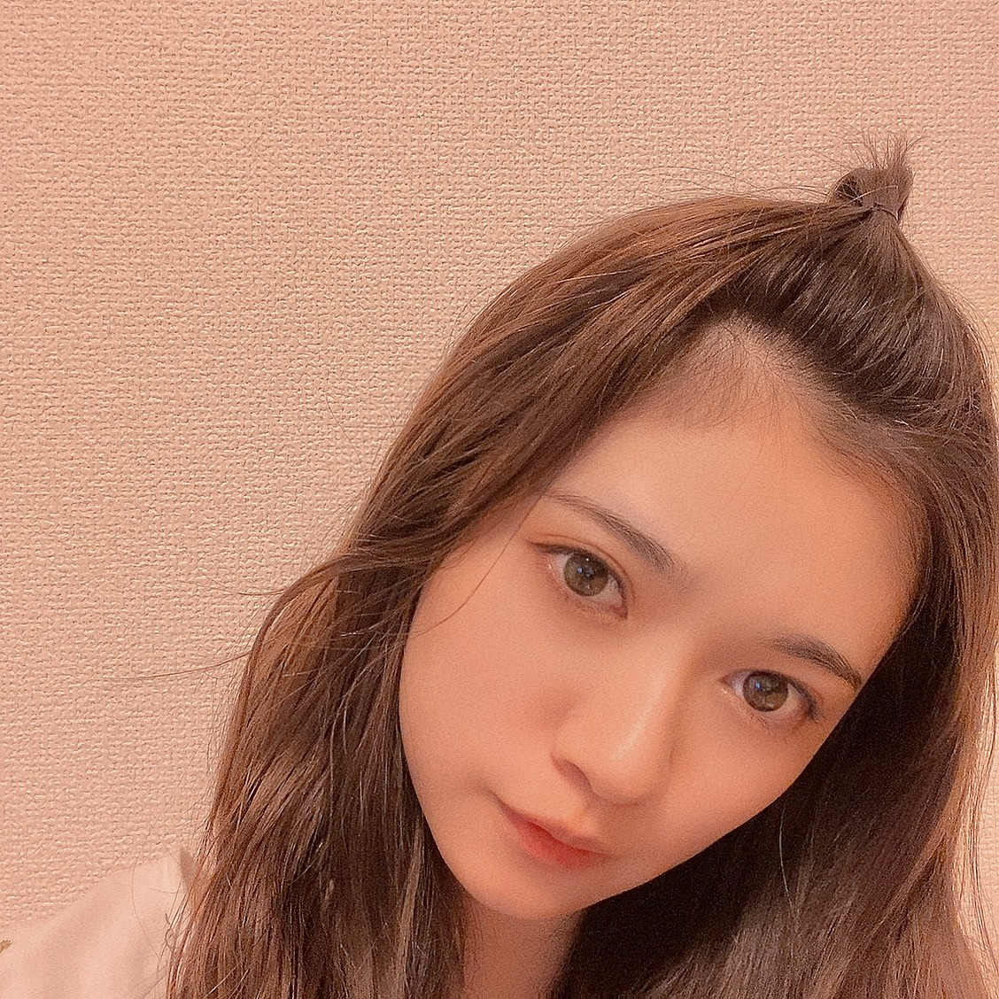
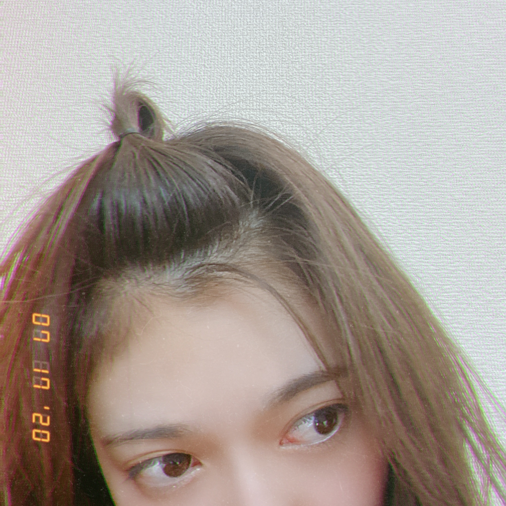
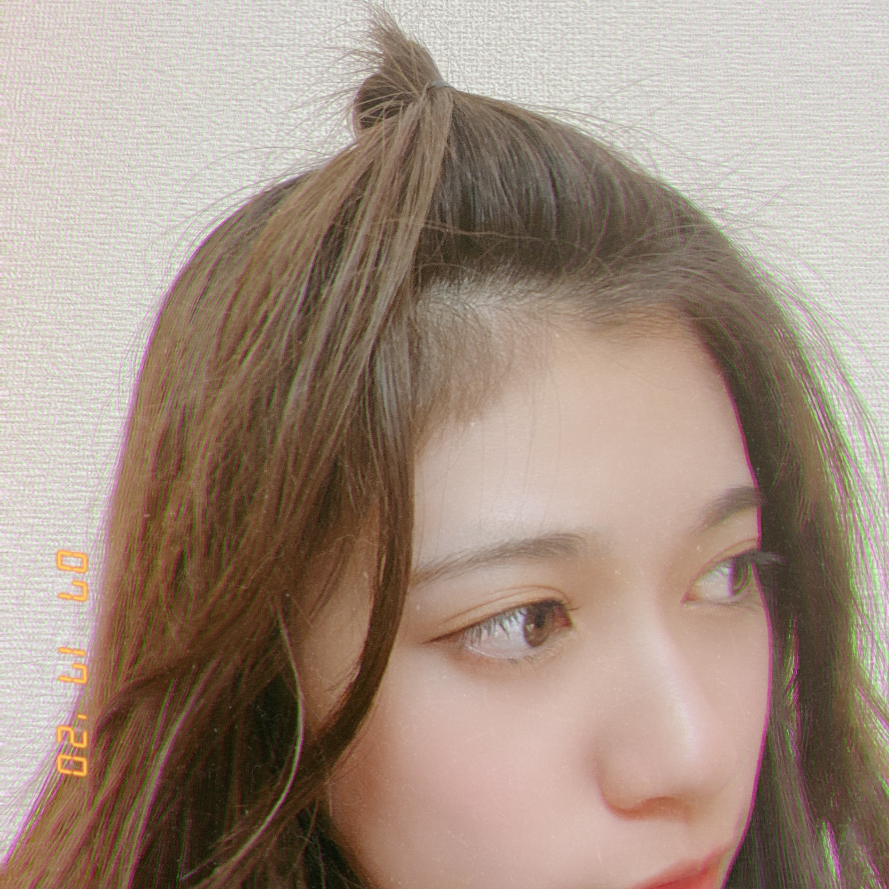
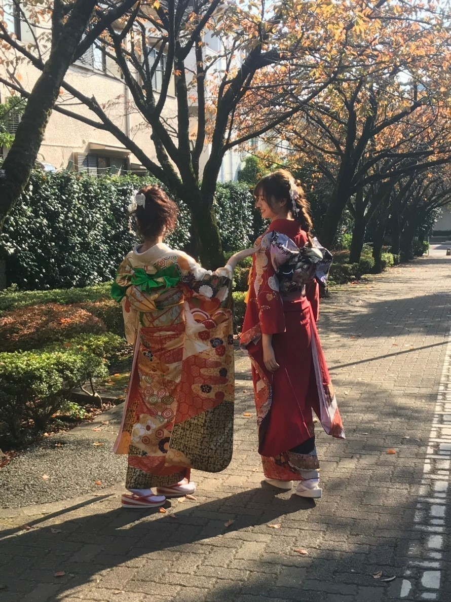

2020/0811Tueはい
作詞を書くことが小さな頃から趣味でして
これを趣味と言えるのか分かりませんが、、、
また、何年振りかに少し書き留めました。
大したことはないんですけど
思いついた単語とかシチュエーション
いつかに役立つ様に書いています。
あと最近方言も語学もごちゃ混ぜになりがち
なんでも取り入れたい癖が、、、。
相づちとか
うん！
はい！
みたいな時の
はい！
中国語と韓国語の発音なんとなく似てるから
自分でもどっち言ってるのか分からなくなって
これを趣味と言えるのか分かりませんが、、、
また、何年振りかに少し書き留めました。
大したことはないんですけど
思いついた単語とかシチュエーション
いつかに役立つ様に書いています。
あと最近方言も語学もごちゃ混ぜになりがち
なんでも取り入れたい癖が、、、。
相づちとか
うん！
はい！
みたいな時の
はい！
中国語と韓国語の発音なんとなく似てるから
自分でもどっち言ってるのか分からなくなって
頭がぐちゃっとするのが最近の悩みです、、、。
色んな言語を学んで歌詞とか作ってみたいですねー。
色んな言語を学んで歌詞とか作ってみたいですねー。
あと、教科書とかには載ってない
知識はあるよねーって、、、
昔、ひなこにもこんな事を言われた様な気がします
確か私の大好きな宇宙の話になったときに
そう言うのを調べている時間が好きなんですよね。☺️
まだまだ知らない事、沢山
これから何十年生きたとしても
知らないまま終わることの方が多くて、、、
だと考えるとより
1日を充実させようと思えます。
トップ目とれるカナお邪魔させて頂きまた。
蘭世ちゃんはよく喋るねーと言われました。
とても素でリラックスして楽しめました。
確かに、お話し大好きですし
自分の知らない事にはとことん興味が湧きます。
麻雀できるってかっこいいですよね。
らじらーお邪魔しました。
まさかの、約1年振り
やっぱり楽しくてあたたかい場所でした。
飛鳥さんお誕生日おめでとうでしたー。
ここでも言わせてください。
ずっとずっと
私は大好きだー。☺️
璃果ちゃんもおめでとうだー。
ゆりちゃんかきちゃんも
乃木坂46は8月生まれ多い気がする
いや、なんか8月生まれの人って多い気がする。
夏ですね。！！




成人式の前に撮影させてもらった時の写真
うめー
うめぴよ
写真集発売おめでとうだー。☺️
うめぴよ
写真集発売おめでとうだー。☺️

2020/08/11 21:30
コメント(446)
お疲れさま、らんぜさん(^^♪
靴擦れしてしまったんだね
大丈夫かな、結構心配です(>_<)
靴擦れの原因は、もちろん足に合わないってのもあるんだけど、足への重心のかけ方や歩き方も見直したりすると、改善される事もあるみたいだよ。気に入った靴やサンダルなら、たくさん履きたいよね。
それと、こじはるさんデザインのワンピース、表情によっても大人っぽくなるし、キュートだけど綺麗な女性のイメージとても好きです。もっと色々なお洋服に出逢えるといいし、いつか蘭世デザインの洋服でネットでポチッ♪と出来たりすると嬉しいです。
あと作詞だね♪
横山さんも、らんぜは言葉を持ってる人とおっしゃってくれていたから、おそれずどんどん色んな事にチャレンジしてほしいです、ファンの皆で応援＆後押しするからね！
まだまだ暑い日が続きますが、くれぐれも御体の健康には気付けてくださいね！
これからもずっと蘭世の幸せが私の幸せです。
ものすごい暑さの中、お疲れ様です。
おでこを出した蘭世さんは中々見れないので驚きました。
すごく大人っぽくて綺麗です。
夏らしくもありますね。
作詞ってその時の等身大の自分が現れそうで、日記のような思い出にもなりそうで素敵ですね。
おでこを出した蘭世さんは中々見れないので驚きました。
すごく大人っぽくて綺麗です。
夏らしくもありますね。
作詞ってその時の等身大の自分が現れそうで、日記のような思い出にもなりそうで素敵ですね。
こんにちは☺︎
毎日本当に暑いですね(*_*)
高温注意報？みたいなのも出てる地域もあるので、
蘭世ちゃんも水分補給とかして暑さには気をつけてくださいね！
『おすすめ映画』
プリティ・プリンセス
ディズニープラスで観れるよ！
女の子だったら誰もが憧れるようなお話です。
キラキラした世界の中にも悩みがあり、
おっちょこちょいでお転婆な主人公がとっても可愛いの♡
そんな主人公を演じているアン・ハサウェイは私の大好きな女優さんの1人です！
今日は2観てるんだ〜
おすすめなので観たことなかったらぜひ☺️
午後からも良い時間を過ごせますように:)♡
毎日本当に暑いですね(*_*)
高温注意報？みたいなのも出てる地域もあるので、
蘭世ちゃんも水分補給とかして暑さには気をつけてくださいね！
『おすすめ映画』
プリティ・プリンセス
ディズニープラスで観れるよ！
女の子だったら誰もが憧れるようなお話です。
キラキラした世界の中にも悩みがあり、
おっちょこちょいでお転婆な主人公がとっても可愛いの♡
そんな主人公を演じているアン・ハサウェイは私の大好きな女優さんの1人です！
今日は2観てるんだ〜
おすすめなので観たことなかったらぜひ☺️
午後からも良い時間を過ごせますように:)♡
ハロハローらんぜ(^^)/
おつかれさまです♪
さっき気がついたのですが、、、
らんぜ、昨日メールを送っていてくれたのですね（>_<）‼ いつもと違うメールボックスに振り分けられてて、気がつくのが今日になってしまいました、、、ありがとう！！らんぜ(^^)
メイク薄い、ようになかなか見えないらんぜのお顔だち。美しいです！らんぜ(^^)b
そんなテイストも、スッとして素敵です(^^)♪
いろんなメイク法のらんぜのお顔が思い浮かびますねぇ。髪型もだけど、メイクでホントに印象って変わるんだなあって。たくさんの想いをかさねていって、そういうこともきっと、らんぜの美しいお顔に現れてくるからかな、、、
らんぜ、とっても綺麗(^^)
今回のとまらんぜ 、まず最初にビックリしたんです。
らんぜみずからが、眼帯姿のお写真を載せてくれたんですから！およそ1年に1度のスーパーレアな、らんぜのお姿。とまらんぜ読者に特別なお中元ですね(^^)
安心して！眼帯姿もすっごくすっごく、美しいから！！あすかみたい、、、あ、アニメの方のアスカね！劇場版^^;
でも、らんぜが敬愛するあすかさんにも、、、それは昔2期生のプロフィール画像を、友だちと見ていた時に、、、
らんぜ、おめめはもう大丈夫かな？目立たなくなったよ〜って、らんぜ言ってたけど違和感とか、まだ残ってるんじゃないかなぁと。
目もやっぱり粘膜系の修復のビタミン群が、いいのかな、多分、、、
美味しいもので、栄養補給して、むりせずよくなってくださいね、らんぜ(^^)
むむぅ、のどがかわいてきました、、、なんかのみたいよ！お茶飲んできますね！
明るく！日曜の夕方はせつなくなるので、明るくまだまだ、楽しくいきましょう。
ごきげんようらんぜ。
また書きますね(^^)/〜
おつかれさまです♪
さっき気がついたのですが、、、
らんぜ、昨日メールを送っていてくれたのですね（>_<）‼ いつもと違うメールボックスに振り分けられてて、気がつくのが今日になってしまいました、、、ありがとう！！らんぜ(^^)
メイク薄い、ようになかなか見えないらんぜのお顔だち。美しいです！らんぜ(^^)b
そんなテイストも、スッとして素敵です(^^)♪
いろんなメイク法のらんぜのお顔が思い浮かびますねぇ。髪型もだけど、メイクでホントに印象って変わるんだなあって。たくさんの想いをかさねていって、そういうこともきっと、らんぜの美しいお顔に現れてくるからかな、、、
らんぜ、とっても綺麗(^^)
今回のとまらんぜ 、まず最初にビックリしたんです。
らんぜみずからが、眼帯姿のお写真を載せてくれたんですから！およそ1年に1度のスーパーレアな、らんぜのお姿。とまらんぜ読者に特別なお中元ですね(^^)
安心して！眼帯姿もすっごくすっごく、美しいから！！あすかみたい、、、あ、アニメの方のアスカね！劇場版^^;
でも、らんぜが敬愛するあすかさんにも、、、それは昔2期生のプロフィール画像を、友だちと見ていた時に、、、
らんぜ、おめめはもう大丈夫かな？目立たなくなったよ〜って、らんぜ言ってたけど違和感とか、まだ残ってるんじゃないかなぁと。
目もやっぱり粘膜系の修復のビタミン群が、いいのかな、多分、、、
美味しいもので、栄養補給して、むりせずよくなってくださいね、らんぜ(^^)
むむぅ、のどがかわいてきました、、、なんかのみたいよ！お茶飲んできますね！
明るく！日曜の夕方はせつなくなるので、明るくまだまだ、楽しくいきましょう。
ごきげんようらんぜ。
また書きますね(^^)/〜
元気よー！
代々木第一体育館からの生配信観てる！
バスケ！！
またいつか代々木でライブをーって思いながらも。
代々木第一体育館からの生配信観てる！
バスケ！！
またいつか代々木でライブをーって思いながらも。
モバメいっぱい送ってくれてありがとー！
サコッシュ使わせてもらってるよー！
ちょうどいいサイズだしオシャレだから使いやすい！
私はウインクとかできないから出来る蘭世ちゃんが羨ましい～！
サコッシュ使わせてもらってるよー！
ちょうどいいサイズだしオシャレだから使いやすい！
私はウインクとかできないから出来る蘭世ちゃんが羨ましい～！
ついこの間蘭世さんのサコッシュを持って出かけました！とてもオシャレで使い勝手もよく最高でしたよ！
8/16日曜日。モバメありがとうございます。蘭世さんのサコッシュ頻繁にお出かけ用で使ってますよ！
寺田蘭世サコッシュは確かに好評です！我々オタクも肌でそれを感じています。カナさんの占いでもあった創造性の高さが遺憾なく発揮されていて、アイドルグッズとは思えない程にオシャレアイテムでした。色使いがセンス良いので友人に何処で買ったの？それ欲しんだけどって言われた事があり、とても嬉しかったです。
寺田蘭世サコッシュは確かに好評です！我々オタクも肌でそれを感じています。カナさんの占いでもあった創造性の高さが遺憾なく発揮されていて、アイドルグッズとは思えない程にオシャレアイテムでした。色使いがセンス良いので友人に何処で買ったの？それ欲しんだけどって言われた事があり、とても嬉しかったです。
蘭世ちゃんこんにちは♪( ´θ｀)
モバメ大量投下っ！ありがとう
そやねん自撮りめっちゃうまいよね、可愛いよ
ひょろひょろくんをお外に
2人とも熱中症には気をつけるんだよ
モバメ大量投下っ！ありがとう
そやねん自撮りめっちゃうまいよね、可愛いよ
ひょろひょろくんをお外に
2人とも熱中症には気をつけるんだよ
やぁ(｡･ω･)ﾉﾞ最愛なる蘭世
メ―ルありがとう！
元気やで！
ちょいと午前中に買い物に行ったときは暑さに溶けそうになったけど笑
今はね～洋画観てた～
蘭世
( ,,`･ω･´)ﾝﾝﾝ？
ウインクの練習してるんか？
蘭世
てか練習してるのが可愛いわ
上手く出来たら今度こそ握手会でやってもらお( *´艸｀)
蘭世
たまに画質～～～！って思う時もあるけどそれはカメラの性能だからな笑
おお！妹さんはそんな風に妹目線でもファン目線でも話してくれるのは有難いな
ひょろひょろ君も外に連れだしたいな
う～んそうやな～シベリアあたり似合いそうかも
てか徐々にひょろひょろ君メディアに出てきてるもんな笑
夢があることは良き事
沢山有難いし嬉しい
最高！どれもお気に入り
ウインク練習してるの可愛いで
ボーダー良いな～似合う
ザンビの動画でもボーダーだったし似合うよな～って思った。
赤は蘭世
俺は蘭世
ん？今日も買い物行く時使ってたで
エコバック持つようになって毎日使ってる
めちゃくちゃ使いやすいからな！
大きさもちょうどいいし。
てか自分がプロデュースした物を使ってくれてる人を見るとすごくうれしいな
そこでちゃんとペコってありがとうって出来る蘭世
両方とも持ってる！
使い心地は最高！さっきも書いたけど、大きさもちょうどいいし俺にはすごく便利なアイテム！
まだデニムしか使ってないけど今度黄色い方も使う
きっとままた後で(｡･ω･)ノ
朝のおはようコメあがってないな…やっぱURL書き込んだからかな…読んで欲しい記事なんだけどな…
お疲れ様です。
モバメありがとー。
お写真は素敵なウィンクのがお気に入りです！
私も右目は出来るけど左目が難しいので練習しようかな笑
ひょろひょろくんとの特集は是非見たいです！雰囲気のある洋館でバキバキに極めたファッションの蘭世ちゃんとひょろひょろくん…格好良いと可愛いとの混在が素敵だと思うの。
サコッシュは愛用させていただいています！大人しい服装が多いのですが可愛いアクセントになってお気に入りです:-)
大好きです。またね:-)
モバメありがとー。
お写真は素敵なウィンクのがお気に入りです！
私も右目は出来るけど左目が難しいので練習しようかな笑
ひょろひょろくんとの特集は是非見たいです！雰囲気のある洋館でバキバキに極めたファッションの蘭世ちゃんとひょろひょろくん…格好良いと可愛いとの混在が素敵だと思うの。
サコッシュは愛用させていただいています！大人しい服装が多いのですが可愛いアクセントになってお気に入りです:-)
大好きです。またね:-)
メールありがとうね〜！
きょうは、お買い物に行ったよー！
最近は夕方に雷がなることが多くて怖いよね(/ω＼)
らんぜちゃんは元気してますかー？
なかなかお外に行ける機会が無いから
ひょろひょろくんはちょっとつらいね〜！
いつか、ライブにも連れてきてよねっ！！
やっぱり、らんぜさんがずっと好きー。！！
きょうは、お買い物に行ったよー！
最近は夕方に雷がなることが多くて怖いよね(/ω＼)
らんぜちゃんは元気してますかー？
なかなかお外に行ける機会が無いから
ひょろひょろくんはちょっとつらいね〜！
いつか、ライブにも連れてきてよねっ！！
やっぱり、らんぜさんがずっと好きー。！！
赤白のボーダーにひょろひょろくんの写真好き。
それと妹さんを褒めてるめーるに添付されてる写真全体じゃなくて一部分を撮るの好きなんだよねー
それと妹さんを褒めてるめーるに添付されてる写真全体じゃなくて一部分を撮るの好きなんだよねー
未反映分
おはよう
今日も蘭世
今日もぐっすり睡眠出来た
ショートスリーパーの俺にはホンマ珍しい
今日は朝起きてまずいつも通り音楽を聴きながらご飯を食べそれでTwitterを見たらすごく良いというか今の人にも読んで欲しい記事があって蘭世
LINE NWESでCoccoって検索して琉球新報の『戦争の記憶、いかに次世代へ？Coccoが明かす祖父母の教え
』って記事を読んで欲しいな
戦争経験者でもも語られることを望む人も望まない人も色々なんだなって思った。
なかでも話してるけど伝え方ってすごく大事だなとも思った。
確かに戦争だけじゃなく地震の事を話すときも話したくないって想いが出てくるときもあるもんな。
決していい思い出ではないから…後世にも伝えないといけない事だろうけどな。
でもこの文を読んだら結構考えさせられる。
頭の悪い俺でさえ考えてしまうもんな。
Coccoさんの音楽は嫌いじゃないけど、俺にとっては当時を思い出すから避けてきたんだよな…
蘭世
又聴こうかな
さて今日は俺はお休みです。
でもでもでもね多分暑いから出かけないと思う笑笑
水分補強をしながら家で映画でも観ようかな
蘭世
色々な対策をしっかりとして過ごすんやで
それじゃ今日も元気に沢山笑える日にしよう！
今日も出会う方々や頂けるお仕事に感謝して初心を忘れずに楽しんで笑顔で居られる日にしよう。
産んで育ててくれた御両親にも常に感謝を…
じゃきっとまた後で(´▽｀)
いってらっしゃい！
夏が届きました☺️
今！のぎのので君に贈る花がない流れてるよー
蘭世ちゃんにもお花をしばらく贈ってない…
いろいろと、思い馳せる歌。
今！のぎのので君に贈る花がない流れてるよー
蘭世ちゃんにもお花をしばらく贈ってない…
いろいろと、思い馳せる歌。
今日は約3年間寺田蘭世単推しとして生きてきた人生を振り返っていました。過去の記事やその時に何を思い感じて考えていたのかをできる限り思い出し、考察していました。
やはり、寺田蘭世単推しとして乃木オタをやってて良かったです。学校に友達が少ないので、乃木オタ友達との交流が自分を成長させてくれる経験を沢山経験出来ています。
寺田蘭世推しの人達は蘭世さんに似て、真面目な人達が多いですよ！
具体的に言うと、電車で席を譲ったり義理人情に熱い人が多いです。
それは、寺田蘭世さんが真面目で不器用で嘘が苦手な人柄のおかげです。
やはり、寺田蘭世単推しとして乃木オタをやってて良かったです。学校に友達が少ないので、乃木オタ友達との交流が自分を成長させてくれる経験を沢山経験出来ています。
寺田蘭世推しの人達は蘭世さんに似て、真面目な人達が多いですよ！
具体的に言うと、電車で席を譲ったり義理人情に熱い人が多いです。
それは、寺田蘭世さんが真面目で不器用で嘘が苦手な人柄のおかげです。
今日は、らじらー繰り返し聞いてました〜！！！
蘭世ちゃん可愛い！なんてもんじゃない！大好き！
こじはるさんのデザインした服？大人っぽくて素敵でした！
らんぜちゃんの今まで着てるの見た事ないような服でいいねー！ってなりました。
らんぜちゃん！熱中症等々気をつけてください！！！
元気な姿で会える日までお互いがお互いの場所で、でも、一緒に頑張っていきたいです！
レイ┏○ﾍﾟｺｯ。
蘭世ちゃん可愛い！なんてもんじゃない！大好き！
こじはるさんのデザインした服？大人っぽくて素敵でした！
らんぜちゃんの今まで着てるの見た事ないような服でいいねー！ってなりました。
らんぜちゃん！熱中症等々気をつけてください！！！
元気な姿で会える日までお互いがお互いの場所で、でも、一緒に頑張っていきたいです！
レイ┏○ﾍﾟｺｯ。
蘭世モバメありがとう！
最近暑くてダラダラしがちだったから頑張らなければ、、
浴衣の蘭世かわいい！
蘭世も体調とか気を付けてね！
最近暑くてダラダラしがちだったから頑張らなければ、、
浴衣の蘭世かわいい！
蘭世も体調とか気を付けてね！
やぁ
メ―ルありがとう！
俺も好き～！
蘭世
あ～一緒に花火見たいししたい
京都を浴衣デートしたい
俺が浴衣着たらお相撲さんやけど
(。´・ω・)ん?
何が大丈夫なんだい？
他を見てないかって事かい？それは大丈夫蘭世
しかし、お家時間仕事してたけど、ダラダラもしてたからな…笑
何？ツンツンで来るの？
じゃ俺は照れさせていきます
甘やかさなへんで
照れて可愛い蘭世
きっとままた後で(｡･ω･)ノ
らんぜちゃんー！
らんぜちゃんデザインのサコッシュ使ってますよ！
お気に入りなんです。
夏らしくていいねって言われました！
なんかね、自分の事のように嬉しかった。本当に。
らんぜちゃんが褒められたりすると私も嬉しい。
レイ┏○ﾍﾟｺｯ。
らんぜちゃんデザインのサコッシュ使ってますよ！
お気に入りなんです。
夏らしくていいねって言われました！
なんかね、自分の事のように嬉しかった。本当に。
らんぜちゃんが褒められたりすると私も嬉しい。
レイ┏○ﾍﾟｺｯ。
僕は両目でウインクできるで
太もものところに蝉が掴まった！
と、すぐ翔んでった。たかく、林の上の方へ。
今さっき。
もう少しお話したかったかも。アブラゼミくん。
メキシコ？ イメージ湧かないなぁ。
そもそも「メキシコが体に合う」とは、どういう状態なのでしょうか (?_?)
しっくり馴染む？
陽気で、いい加減ともいえるラテン気質が、日頃の義務感でガチガチになった日本人の心を解きほぐしてくれそうではありますね。(^^)
マヤ、アステカに興味あるんだったよね。蘭世先生
滅んだ文明跡に立ち、戦争と平和、環境破壊について考える。メキシコの視点から日本人の価値観を問いただす、etc.
内容の濃いフォトエッセイになりそうですね。
思い切って半年間くらい、人生を掛けた旅をしてみたいところです。
と、すぐ翔んでった。たかく、林の上の方へ。
今さっき。
もう少しお話したかったかも。アブラゼミくん。
メキシコ？ イメージ湧かないなぁ。
そもそも「メキシコが体に合う」とは、どういう状態なのでしょうか (?_?)
しっくり馴染む？
陽気で、いい加減ともいえるラテン気質が、日頃の義務感でガチガチになった日本人の心を解きほぐしてくれそうではありますね。(^^)
マヤ、アステカに興味あるんだったよね。蘭世先生
滅んだ文明跡に立ち、戦争と平和、環境破壊について考える。メキシコの視点から日本人の価値観を問いただす、etc.
内容の濃いフォトエッセイになりそうですね。
思い切って半年間くらい、人生を掛けた旅をしてみたいところです。
メール沢山ありがとう☺︎
元気だよー！
蘭世ちゃんも元気ですか？？
今日はさっきのコメントにも書いたように、プリティ・プリンセス2を観てました✌︎
できないけど頑張ってやろうとしてるお顔も好きだけど、
上手にできるのも可愛くて良いよね！
いつか蘭世ちゃんからウインクもらいたいな〜♡
私も蘭世ちゃんの撮るお写真好きです☺️
フォトブック作れちゃいそう！いつかインスタもしてほしいな〜
妹さんはファン目線だから、蘭世ちゃんにとっても良い刺激になってそうですね！
蘭世ちゃんの妹ってどんな感覚なんだろう、、。
ひょろひょろくんとどこか行けたら良いね！
それこそ、フォトブックとか作れるならぜひひょろひょろくんも登場させてほしいな☺️
蘭世ちゃんの夢、応援してるよ！！
画像たくさんありがとね！！！
どれも可愛くて迷うな〜。
一つ選ぶとしたら時計の写真かな。
口元しか写ってない、その撮り方がお洒落で好きです☺️
ボーダー！
ボーダー聴きたくなったよ〜〜〜
赤白は蘭世ちゃんのカラーやもんね！
私もずっと1番好きな色は赤です◎
ファンの方をお見かけしたんですね！
目に見えるって嬉しいね☺️
その女、って表現も良きやなあ。
女の子やったんかな？？
ペコって、その場面を想像したら素敵すぎました、、！！！
私もサコッシュ持ってるよ〜✌︎
シンプルなお洋服の時にデニムのデザインってアクセントになると思うし、可愛いからお気に入りです☺️
夏感じれたよ！ありがとう☺️
私も蘭世ちゃんのことが大好きだよーーー♡♡♡
沢山メール送ってくれるのとっても嬉しいです！
私の活力になってます！！！
ツンツンな蘭世ちゃんも良いけど、蘭世ちゃんの甘々な面も見せてほしいな〜笑
早く会いたいね☺️
元気だよー！
蘭世ちゃんも元気ですか？？
今日はさっきのコメントにも書いたように、プリティ・プリンセス2を観てました✌︎
できないけど頑張ってやろうとしてるお顔も好きだけど、
上手にできるのも可愛くて良いよね！
いつか蘭世ちゃんからウインクもらいたいな〜♡
私も蘭世ちゃんの撮るお写真好きです☺️
フォトブック作れちゃいそう！いつかインスタもしてほしいな〜
妹さんはファン目線だから、蘭世ちゃんにとっても良い刺激になってそうですね！
蘭世ちゃんの妹ってどんな感覚なんだろう、、。
ひょろひょろくんとどこか行けたら良いね！
それこそ、フォトブックとか作れるならぜひひょろひょろくんも登場させてほしいな☺️
蘭世ちゃんの夢、応援してるよ！！
画像たくさんありがとね！！！
どれも可愛くて迷うな〜。
一つ選ぶとしたら時計の写真かな。
口元しか写ってない、その撮り方がお洒落で好きです☺️
ボーダー！
ボーダー聴きたくなったよ〜〜〜
赤白は蘭世ちゃんのカラーやもんね！
私もずっと1番好きな色は赤です◎
ファンの方をお見かけしたんですね！
目に見えるって嬉しいね☺️
その女、って表現も良きやなあ。
女の子やったんかな？？
ペコって、その場面を想像したら素敵すぎました、、！！！
私もサコッシュ持ってるよ〜✌︎
シンプルなお洋服の時にデニムのデザインってアクセントになると思うし、可愛いからお気に入りです☺️
夏感じれたよ！ありがとう☺️
私も蘭世ちゃんのことが大好きだよーーー♡♡♡
沢山メール送ってくれるのとっても嬉しいです！
私の活力になってます！！！
ツンツンな蘭世ちゃんも良いけど、蘭世ちゃんの甘々な面も見せてほしいな〜笑
早く会いたいね☺️
蘭世、こんばんは！
今日はたくさんメールくれてありがとう。
最近はいかがお過ごしですか。
健康に過ごせているなら、何よりです。
僕は元気に生きていますよ！
蘭世がプロデュースしたサコッシュ、大切に使っているよ、お気に入りです。この前、近場に洋服を買いに行った時に、お店の方に「オシャレなカバンですね！」って蘭世のサコッシュを褒めてもらったよ。とっても嬉しかった。その時身に付けていたのはパッチワークの方だったけど、黄色いカラーの方も気に入ってます。生誕Tシャツや46時間TVのデザインタオルもそうだけど、やっぱり蘭世のデザインしたグッズは、思い入れが増します。大好きな人がデザインしてくれたものですからね。これからも大切に使っていきたいです。いつかは、握手会で持って行けたらいいな。2ポケットで収納も優秀だからね。
正直、今日は適度にのんびりダラダラと過ごしてしまいました。蘭世には見透かされてるかな。怒られちゃうでしょうか。でも、握手会でも甘やかさない蘭世のその実直さや正直さが大好きなんだけどね。
明日からはアルバイトで忙しくなるけど、蘭世が今日くれたメールでたっぷり充電できたよ。ありがとう。
暑い日が続きますから、水分補給など気を付けて、健康に過ごしていてくださいね。いつか、次に蘭世と会える時まで、お互い健康で笑顔で過ごせていたら良いね。蘭世の幸せを願っています。
またコメントしますね。おやすみなさい。
蘭世、大好きよ。
今日はたくさんメールくれてありがとう。
最近はいかがお過ごしですか。
健康に過ごせているなら、何よりです。
僕は元気に生きていますよ！
蘭世がプロデュースしたサコッシュ、大切に使っているよ、お気に入りです。この前、近場に洋服を買いに行った時に、お店の方に「オシャレなカバンですね！」って蘭世のサコッシュを褒めてもらったよ。とっても嬉しかった。その時身に付けていたのはパッチワークの方だったけど、黄色いカラーの方も気に入ってます。生誕Tシャツや46時間TVのデザインタオルもそうだけど、やっぱり蘭世のデザインしたグッズは、思い入れが増します。大好きな人がデザインしてくれたものですからね。これからも大切に使っていきたいです。いつかは、握手会で持って行けたらいいな。2ポケットで収納も優秀だからね。
正直、今日は適度にのんびりダラダラと過ごしてしまいました。蘭世には見透かされてるかな。怒られちゃうでしょうか。でも、握手会でも甘やかさない蘭世のその実直さや正直さが大好きなんだけどね。
明日からはアルバイトで忙しくなるけど、蘭世が今日くれたメールでたっぷり充電できたよ。ありがとう。
暑い日が続きますから、水分補給など気を付けて、健康に過ごしていてくださいね。いつか、次に蘭世と会える時まで、お互い健康で笑顔で過ごせていたら良いね。蘭世の幸せを願っています。
またコメントしますね。おやすみなさい。
蘭世、大好きよ。
メールありがとうね〜！
きょうは、お買い物に行ったよー！
最近は夕方に雷がなることが多くて怖いよね(/ω＼)
らんぜちゃんは元気してますかー？
なかなかお外に行ける機会が無いから
ひょろひょろくんはちょっとつらいね〜！
いつか、ライブにも連れてきてよねっ！！
やっぱり、らんぜさんがずっと好きー。！！
きょうは、お買い物に行ったよー！
最近は夕方に雷がなることが多くて怖いよね(/ω＼)
らんぜちゃんは元気してますかー？
なかなかお外に行ける機会が無いから
ひょろひょろくんはちょっとつらいね〜！
いつか、ライブにも連れてきてよねっ！！
やっぱり、らんぜさんがずっと好きー。！！
モバメありがとうー！夏を思い切り！！感じました！ありがとう☺️
蘭世こんばんは❗
NEWSがとまらんぜ読んだよー！
自分は戦争を体験した世代ではないけど、
今日の平和は過去の尊い犠牲のうえに成り立っていることを思い、平和への感謝をしながら過ごしたいと思うよ。
理由はどうであれ戦争は絶対に起こしてはいけないと思う！
蘭世からモバメくると嬉しいー！
写真は一昨日の、こじはるさんの…や、はいよー
のとかとても癒されるなあ！
妹ちゃん、蘭世推しなんだね！
身近に応援してくれたり、色んなこと伝えてくれる最高のファンがいてくれるのって嬉しいよね！
サコッシュ、普段使いしやすいので買い物に気軽に使っているよ！
またイベント始まったらイベントにも持って行きたいなあ(^^)
やっぱり日本の夏は浴衣と美女だ〜(笑)
NEWSがとまらんぜ読んだよー！
自分は戦争を体験した世代ではないけど、
今日の平和は過去の尊い犠牲のうえに成り立っていることを思い、平和への感謝をしながら過ごしたいと思うよ。
理由はどうであれ戦争は絶対に起こしてはいけないと思う！
蘭世からモバメくると嬉しいー！
写真は一昨日の、こじはるさんの…や、はいよー
のとかとても癒されるなあ！
妹ちゃん、蘭世推しなんだね！
身近に応援してくれたり、色んなこと伝えてくれる最高のファンがいてくれるのって嬉しいよね！
サコッシュ、普段使いしやすいので買い物に気軽に使っているよ！
またイベント始まったらイベントにも持って行きたいなあ(^^)
やっぱり日本の夏は浴衣と美女だ〜(笑)
実はお盆休みはダラダラしてた
明日から仕事が始まっちゃう！
でも今日蘭世ちゃんからモバメ沢山来て夏を満喫したさ
まだまだ夏はこれからだけど
明日から仕事が始まっちゃう！
でも今日蘭世ちゃんからモバメ沢山来て夏を満喫したさ
まだまだ夏はこれからだけど
こんばんは♪
Mリーグ楽しかったです☆
猫舌SRの進行も上手かったです✨
モバメもとっても情熱的ですね✴
らんらんの情熱とっても魅力的ですよ✌
外部へ更にアピールして欲しいです～☺
Mリーグ楽しかったです☆
猫舌SRの進行も上手かったです✨
モバメもとっても情熱的ですね✴
らんらんの情熱とっても魅力的ですよ✌
外部へ更にアピールして欲しいです～☺
蘭世さん♡
毎日暑いですね
元気です♫
サコッシュ、まだあんまり使ってなくて…
お財布と免許証と、携帯と鍵をいれて
ふらっとお出かけするのにいいね。
グレゴリーの小さなbagを普段づかいにしてて
サコッシュは握手で蘭世さんに会う日に、と思ってます。
画像たくさんありがとう。
ブログに上げてくれた、
目覚まし時計と撮ったシリーズ、好きです。
大人っぽいけど、清潔で
凜としているけど、弱さも隠さない
蘭世さんのもつ大きさ広さ、強さが
ちゃんと表現されているから。
会いたいです。
１週間おやすみがあったのですが
あまりに暑くてほとんどお家にいました。
せっかく買ったおニューのギターにも触れず
ほとんど本を読んでいました。
明日からお仕事です。
まだまだ暑い日が続くと思うので
睡眠とって
水分補給して
えいえいおーです(^^)
では、きっとまた。
たくさんモバメありがとう。
おやすみ
浪速の商人（あきんど）
毎日暑いですね
元気です♫
サコッシュ、まだあんまり使ってなくて…
お財布と免許証と、携帯と鍵をいれて
ふらっとお出かけするのにいいね。
グレゴリーの小さなbagを普段づかいにしてて
サコッシュは握手で蘭世さんに会う日に、と思ってます。
画像たくさんありがとう。
ブログに上げてくれた、
目覚まし時計と撮ったシリーズ、好きです。
大人っぽいけど、清潔で
凜としているけど、弱さも隠さない
蘭世さんのもつ大きさ広さ、強さが
ちゃんと表現されているから。
会いたいです。
１週間おやすみがあったのですが
あまりに暑くてほとんどお家にいました。
せっかく買ったおニューのギターにも触れず
ほとんど本を読んでいました。
明日からお仕事です。
まだまだ暑い日が続くと思うので
睡眠とって
水分補給して
えいえいおーです(^^)
では、きっとまた。
たくさんモバメありがとう。
おやすみ
浪速の商人（あきんど）
蘭世、今晩は。
今日も暑い日だったねぇ。体温より高い気温で水道の水がお湯並みに暖かくてビックリしました(^_^;)。
今日もモバメたくさん有難う！
キレイな写真もたくさんで嬉しかったです(^ ^)。
どの写真も良かったけど、ウィンクの写真が1番好きです。
浴衣の写真、清涼感有って涼しげで良いね:)。
今のところカレンダー通りに仕事してるので家でダラダラ、はしてないけどしばらくイベント無いから体がなまってる可能性は有るかも(^_^;)。
怒られないように頑張ります(笑)。
今日ののぎののでひなちまが九州アンダーライブで歌ってくれた「僕だけの光」アコースティックバージョンの話をしてました。
オリジナルも良い曲だけどこのバージョンは心に滲みて思い出深いです。
また聴きたいので、配信とかしてくれないかなぁ、なんて思います(^ ^)。
では、今日も一日お疲れ様でした。
ゆっくり休んでね。
今日も暑い日だったねぇ。体温より高い気温で水道の水がお湯並みに暖かくてビックリしました(^_^;)。
今日もモバメたくさん有難う！
キレイな写真もたくさんで嬉しかったです(^ ^)。
どの写真も良かったけど、ウィンクの写真が1番好きです。
浴衣の写真、清涼感有って涼しげで良いね:)。
今のところカレンダー通りに仕事してるので家でダラダラ、はしてないけどしばらくイベント無いから体がなまってる可能性は有るかも(^_^;)。
怒られないように頑張ります(笑)。
今日ののぎののでひなちまが九州アンダーライブで歌ってくれた「僕だけの光」アコースティックバージョンの話をしてました。
オリジナルも良い曲だけどこのバージョンは心に滲みて思い出深いです。
また聴きたいので、配信とかしてくれないかなぁ、なんて思います(^ ^)。
では、今日も一日お疲れ様でした。
ゆっくり休んでね。
蘭世
お疲れ様です。
モバメたくさんありがとう。
蘭世はお洒落だからいろんなファッションを見せてくれるけど、自分的に1番似合ってると思うのは和服です。
浴衣も似合ってるし、成人式の振り袖もとても良いなって思ってます。
撫で肩だし、首から肩のラインが綺麗だと思ってる。
また是非
今日でお盆休みが終わって明日から仕事が始まるので、蘭世のたくさんのモバメに元気を貰ったので、また頑張ります。
次に会えるのを楽しみにしてます。
今日もありがとう
またね
お疲れ様です。
モバメたくさんありがとう。
蘭世はお洒落だからいろんなファッションを見せてくれるけど、自分的に1番似合ってると思うのは和服です。
浴衣も似合ってるし、成人式の振り袖もとても良いなって思ってます。
撫で肩だし、首から肩のラインが綺麗だと思ってる。
また是非
今日でお盆休みが終わって明日から仕事が始まるので、蘭世のたくさんのモバメに元気を貰ったので、また頑張ります。
次に会えるのを楽しみにしてます。
今日もありがとう
またね
蘭世ちゃん、こんばんは！NEWSがとまらんぜ、読みました。眼帯の蘭世ちゃん、気高き伊達政宗の感じで、かっこよくて、また、守りたいと、愛情をときめかせます。本日のモバメ、いっぱいありがとうね。お気に入りは、片目ウインク写真。空想の中で、蘭世ちゃんと見つめ合いをしちゃいましたー。僕はデニムのサコッシュに、制服姿の蘭世ちゃんのカードタイプキーホルダーを取り付けています。サコッシュと制服、どちらも青系統色で、組み合わせ、よきです。自粛期間やおうち時間の中でも、栄養を摂取しています。
ツンツンした蘭世ちゃん。
でも僕あんまりツンツンされた記憶ないな…
受け取り方の問題？笑
糖分摂取したい…(らじらー風)
でも僕あんまりツンツンされた記憶ないな…
受け取り方の問題？笑
糖分摂取したい…(らじらー風)
蘭世ちゃん、こんばんは〜
蘭世ちゃんの浴衣姿をみて、夏を感じることができましたー！
ありがとうございます
蘭世ちゃんの写真ならどれを見ても元気を貰えるんですけど、
個人的には前髪上げてる蘭世ちゃんが、めっちゃ好きです
ちょんまげスタイルの蘭世ちゃんは優勝です…
最近、お酒を飲みすぎてる…
お酒はほどほどにしようと決めているのに、結局飲み過ぎてしまう
昨日はたくさん飲んだし、たくさん歩きましたよ
博多のとんこつラーメン、何回食べても美味しいです！
僕は熊本出身なんですけど、熊本のラーメンより、博多のラーメンの方が好きなんですよ
福岡に来たら是非食べて貰いたいです！
いやーでも僕の生きがいは蘭世ちゃんだなー
蘭世ちゃんのおかげで、毎日頑張れてますよー
蘭世ちゃんに会える日を楽しみに、明日からも頑張っていきますか〜
えいえいおー！
今日も1日お疲れ様でした♪o(^-^)o
そしてそして、今日はモバメを、ありがとうございました！
元気出ましたーーー♪o(^-^)o
たしかにメイク薄めのほうが顔が濃いかもですね♪
綺麗♪(人´ω｀*).｡*ﾟ+.*.｡
お写真、最高です♪･:*:･(*´∀｀*)ｳｯﾄﾘ･:*:･
暑い日が続いてますね！
体調崩すことなく、楽しく有意義な時間が過ごせますように♪o(^-^)o
そしてそして、今日はモバメを、ありがとうございました！
元気出ましたーーー♪o(^-^)o
たしかにメイク薄めのほうが顔が濃いかもですね♪
綺麗♪(人´ω｀*).｡*ﾟ+.*.｡
お写真、最高です♪･:*:･(*´∀｀*)ｳｯﾄﾘ･:*:･
暑い日が続いてますね！
体調崩すことなく、楽しく有意義な時間が過ごせますように♪o(^-^)o
蘭世ちゃん、ブログ更新ありがとう！
トップ目にらじらーお疲れさま！
作詞してるの！？すごいね！私も曲考えたり歌詞考えたりするの好きだから何か分かるかも。
体調には気をつけてね。
トップ目にらじらーお疲れさま！
作詞してるの！？すごいね！私も曲考えたり歌詞考えたりするの好きだから何か分かるかも。
体調には気をつけてね。
トップ目もらじらーも楽しかったよー！
らじらーで留守電読んでもらえて嬉しかったです。
また出演してくれるのを楽しみに待っています。
らじらーで留守電読んでもらえて嬉しかったです。
また出演してくれるのを楽しみに待っています。
おはようございますらんぜ(^^)
昨日、たくさんのメールありがとう！！
幸せのうちに寝落ちしてしまいました、、、
らんぜ、メールでなにしてるのー？って聞いてくれましたね(^^)
その時、お茶タイムをしていましたよー♪
元気にお茶してました(^^)
ウインクの練習風景のお写真が、とっても可愛かったです(^_-)両目出来るようにがんばってるのね、らんぜ。もちろん！出来たら、最高！
でも、ムリしないでね、、だって目をつむったとき、まつげがあたるとけっこう痛くない？
らんぜまつげ長そうだから、けっこう当たるの感じるんじゃないかな？
安全に、練習してね(^_-)
昨日の、お写真のらんぜに(^_-)してみたよ♪エイッ！(^_-)
でも、連続高速ウィンクみたいな荒技は、、やめておいた方がいいかな、、らんぜのおめめが心配だからね^^;
もうだいぶ、ものもらいおさまったみたいだね。本当に良かったです(^^)ひどくなったりする時もあるじゃないですか。本当に良かった(^_-)
らんぜがちゃんと栄養とって、おからだ大切にしていたからだね！
ありがとう、らんぜ。
らんぜがたくさんメール送ってくれたから、
感想いっぱい聴いてもらいたいよっ！
また書きますね(^^)/
よかったら、ぜひ聴いてくださいね、らんぜ。
今日、らんぜが良い月曜日を送れますように。
たくさん、応援しています(^^)
また書きますね(^^)/〜
今、送ろうとしてブログページ開いたら、
！！あ！新しいブログが！
今から読みます！！！
昨日、たくさんのメールありがとう！！
幸せのうちに寝落ちしてしまいました、、、
らんぜ、メールでなにしてるのー？って聞いてくれましたね(^^)
その時、お茶タイムをしていましたよー♪
元気にお茶してました(^^)
ウインクの練習風景のお写真が、とっても可愛かったです(^_-)両目出来るようにがんばってるのね、らんぜ。もちろん！出来たら、最高！
でも、ムリしないでね、、だって目をつむったとき、まつげがあたるとけっこう痛くない？
らんぜまつげ長そうだから、けっこう当たるの感じるんじゃないかな？
安全に、練習してね(^_-)
昨日の、お写真のらんぜに(^_-)してみたよ♪エイッ！(^_-)
でも、連続高速ウィンクみたいな荒技は、、やめておいた方がいいかな、、らんぜのおめめが心配だからね^^;
もうだいぶ、ものもらいおさまったみたいだね。本当に良かったです(^^)ひどくなったりする時もあるじゃないですか。本当に良かった(^_-)
らんぜがちゃんと栄養とって、おからだ大切にしていたからだね！
ありがとう、らんぜ。
らんぜがたくさんメール送ってくれたから、
感想いっぱい聴いてもらいたいよっ！
また書きますね(^^)/
よかったら、ぜひ聴いてくださいね、らんぜ。
今日、らんぜが良い月曜日を送れますように。
たくさん、応援しています(^^)
また書きますね(^^)/〜
今、送ろうとしてブログページ開いたら、
！！あ！新しいブログが！
今から読みます！！！
こんにちは。
実は僕も8月7日生まれで、野比のび太と同じです(笑)
おめでとうとゆってくれたらよろこびます。
蘭世ちゃんの倍ぐらいいきてますが。
何気にコメント書くのも初投稿のような気がします。
歴代メンバーから数えても蘭世ちゃんが初です。
らじらー聞きましたよ。
タイムフリーでしたが、蘭世ちゃんの話し方トーンがすきです。
蘭世ちゃんがいつもゆってること、心に響いてます。
僕は地方だけど、東京はコロナ大変そうなので、気をつけてね。
返事とかくるのかな？
またコメント書きます。
実は僕も8月7日生まれで、野比のび太と同じです(笑)
おめでとうとゆってくれたらよろこびます。
蘭世ちゃんの倍ぐらいいきてますが。
何気にコメント書くのも初投稿のような気がします。
歴代メンバーから数えても蘭世ちゃんが初です。
らじらー聞きましたよ。
タイムフリーでしたが、蘭世ちゃんの話し方トーンがすきです。
蘭世ちゃんがいつもゆってること、心に響いてます。
僕は地方だけど、東京はコロナ大変そうなので、気をつけてね。
返事とかくるのかな？
またコメント書きます。
元気よー！
代々木第一体育館からの生配信観てる！
バスケ！！
またいつか代々木でライブをーって思いながらも。
代々木第一体育館からの生配信観てる！
バスケ！！
またいつか代々木でライブをーって思いながらも。
蘭世さん作詞の曲を聴いてみたいな
ボーダー、ブランコ、その女、滑走路と
蘭世センターは名曲揃いなので
ハードル上がりきっているけど
けど寺田蘭世なら予想もしない方向で
高さの概念を軽々超えて来てくれそうな
空間と時間の4次元と直交するベクトルで
1+1が無限大になる時空で
非ユークリッド空間から
ワープして来てくれそうな気がします
ボーダー、ブランコ、その女、滑走路と
蘭世センターは名曲揃いなので
ハードル上がりきっているけど
けど寺田蘭世なら予想もしない方向で
高さの概念を軽々超えて来てくれそうな
空間と時間の4次元と直交するベクトルで
1+1が無限大になる時空で
非ユークリッド空間から
ワープして来てくれそうな気がします
おつかれ、らんぜ。
らんぜは、今日はどうだった？
らんぜは、今日はどうだった？
蘭世ぴん可愛いよ♡
ブログ更新、いつもありがとうね。本当にまた握手会で蘭世にあいたいよ。蘭世にも写真集の発売が決まったらオラも嬉しいね。


8/15のメールのお返事です！
〇1通目
化粧薄くても美しいですね☺️
どんな蘭世さんでも美しく、薄めか濃いめかと聞かれたら答えるのが難しそうですね。笑
蘭世さんが好きだー！
以上です！
少し短いですがご容赦を。笑
15日はお墓参り行ってきました！
ご先祖さまに感謝しながら、何事にも感謝しながら生きていきます：）
明日も1日楽しんでいきましょー！
おやすみなさい！
悠人⊿